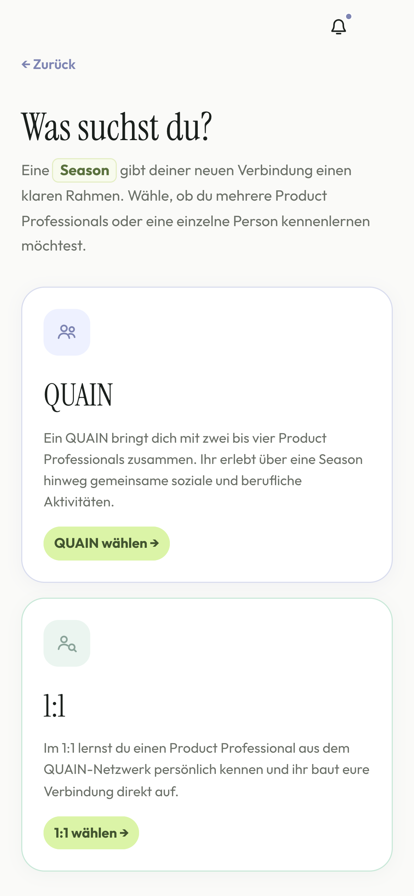
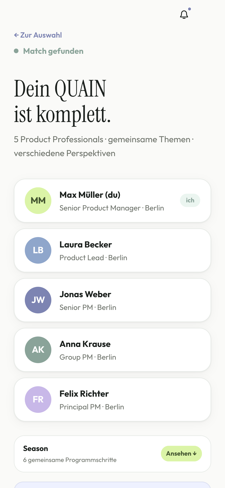
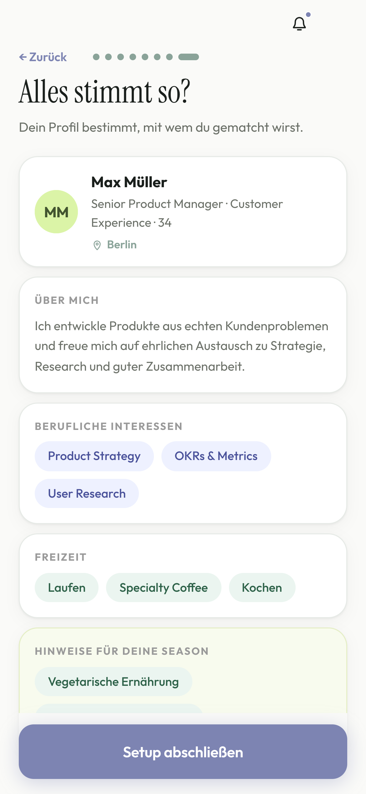
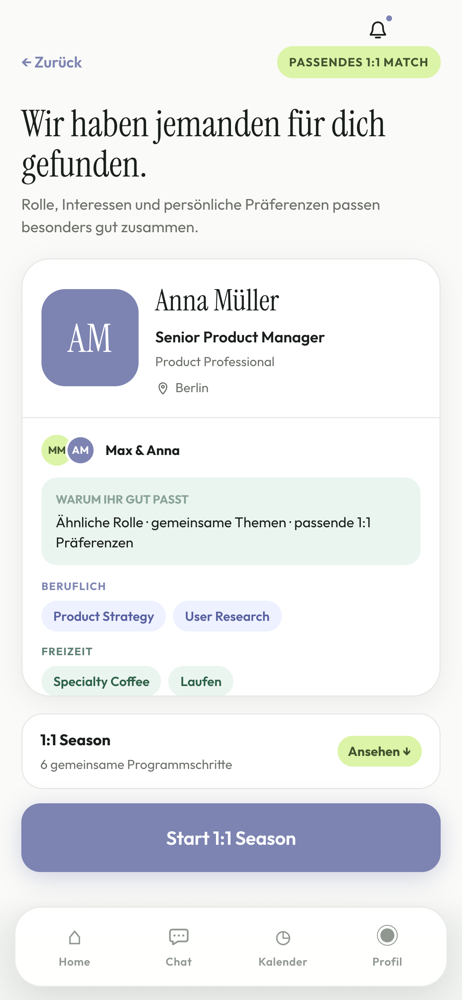
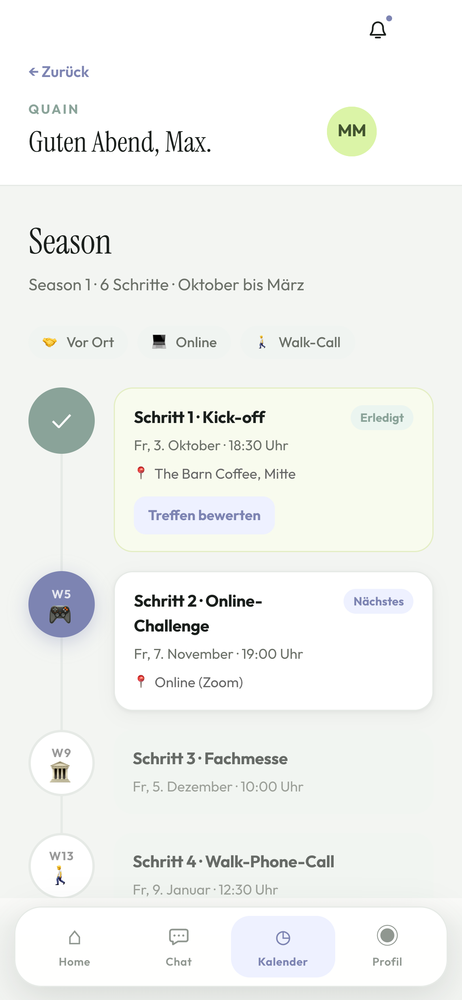
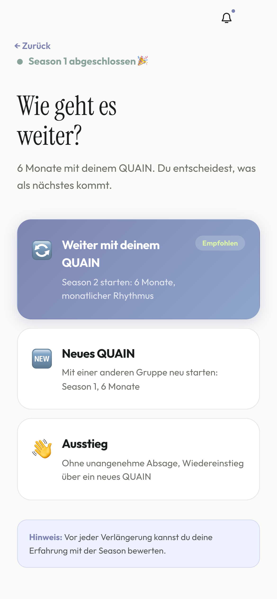

Eine kleine, vertraute Runde.
Eine berufliche Basis aus vertrauten Beziehungen, die wir in guten Zeiten bauen, um uns im Bedarfsfall darauf zu stützen.
Nicolas Moegelin · Berlin, DeutschlandAbschlusspräsentation · Digitale Leute Product Management Bootcamp · 08–11 / 2026
Networking für (Senior) Product Professionals, das sich eher nach Freundschaften schließen anfühlt.
1:1s oder 3–5
Personen in einer Season
6 Monate
Ausstieg ohne Schuldgefühl
6 Aktivitäten
ohne Meeting-Vibe
Eine berufliche Basis aus vertrauten Beziehungen, die wir in guten Zeiten bauen, um uns im Bedarfsfall darauf zu stützen.
Als digitaler Kurator setzen wir Offline- und Online-Formate gezielt ein, um Begegnungen zu schaffen, aus denen verlässliche Beziehungen entstehen statt loser Kontakte.


Wertvolle Kontakte gehen verloren, sobald gemeinsame Arbeit oder Anlässe enden – und fehlen später.[3]
„… [Nach einem Job- oder Projektwechsel] verläuft sich das in der Regel so nach spätestens zwei Jahren.“Interview 01[4]
„Ja, wie mache ich das, dem jetzt [nach langer Zeit ohne Kontakt] zu sagen, dass ich einen Job suche, ist eigentlich doof.“Interview 01[4]
„… den [Monthly] sage ich immer ab. Ich kann ihm die Serie irgendwie noch nicht absagen, weil ich mich noch nicht traue.“Interview 02[5]
„Unser Projektleiter ist jetzt […] der, mit dem ich […] halt laufen gehe, […] dadurch bespreche ich manche Sachen.“Interview 02[5]
Gemeinsame Aktivitäten verbinden und bieten Raum für fachlichen Austausch.
Austausch auf Augenhöhe führt zu Perspektivwechsel und beschleunigt die fachliche Entwicklung – dafür zahlen Kunden.
„… [Nach dem Austausch mit einer Kollegin in gleicher Rolle] habe ich meine Strategie nochmal komplett gewechselt, […] auf die ich selber einfach nicht gekommen bin.“Interview 03[21]
Jede Season hat einen festen Anfang, sechs Aktivitäten und ein eindeutiges Ende, das den Ausstieg einfach macht.[7]
Auf dieser Basis matcht QUAIN die Teilnehmenden und erstellt Aktivitäten.
Klickbarer B2C-Prototyp als Grundlage für das MVP.[7]

Berufliche Schwerpunkte und persönliche Interessen.

QUAIN zeigt, was euch verbindet.

Termin, Ort und Format – QUAIN organisiert.

Still entscheiden: weiter, neues QUAIN oder Ausstieg.
Wir starten mit Privat-Abos und wachsen über Unternehmen, die Plätze für ihre Product-Teams buchen.
Wer zahlt: die Nutzer:in selbst
Zufriedene Nutzer:innen bringen QUAIN in ihr Unternehmen.
Wer zahlt: HR / Learning & Development
Moderierte C-Level Peer-Gruppen gibt es seit Jahrzehnten – YPO seit 1950, Vistage seit 1957 – zu C-Level-Preisen.[6, 12]
Eine feste kleine Runde, die eine Season lang gemeinsam erlebt statt tagt – mit Beziehung als Ziel, zum Preis für Privatpersonen und mit einem Ausstieg ohne Pflichtgefühl nach jeder Season.
In dieser Kombination bei keinem untersuchten Anbieter gefunden (Stand 11/2026).[6]
Planannahme: eine klare Nische, groß genug, um ohne Venture Capital Stadt für Stadt zu wachsen.
567.000 × 118,80 € pro Jahr (12 × 9,90 €) ≈ 67 Mio. € pro Jahr
Annahme auf Basis Product Focus, LinkedIn-Zählung 10/2023[9]
100.000 Product-Rollen in DE × 35 % = 35.000 × 118,80 € ≈ 4,2 Mio. € pro Jahr
Planannahme: Der Product Focus Survey 2026 nennt 46 % Senior PMs; wegen der Selbsteinstufung ziehen wir rund 10 Prozentpunkte ab[10, 11]
B2C ≈ 95.000 €* + B2B 165.000 €** (10 Firmen) ≈ 260 Tsd. € pro Jahr
* Annahme B2C: 5 Städte × Ø 40 Gruppen × Ø 4 Personen = 800 Personen × 9,90 € × 12 Monate ≈ 95.000 €[10]
** Annahme B2B: 15 Personen × 75 € × 12 Monate + 250 € Basisgebühr × 12 Monate = 16.500 € je Firma[13]
Agile Roadmap: Now in den nächsten 3 Monaten, Next in den nächsten 6 Monaten, Later danach.[22]
Figma-Make-Prototyp mit 8 Personen im Interview getestet.
KPI Drop-off Rate · KAN-18–22App auf Supabase, Stripe als Payment; iOS TestFlight und Google Play Internal Testing.
KPI Retention Rate · KAN-18–22Das MVP läuft auf allen Geräten und Betriebssystemen ohne Hindernisse.
KPI Conversion, Retention · KAN-18–24Erste Nutzer:innen in Berlin: zwei Gruppen und zwei 1:1s, über Online-PM-Communities.
KPI Conversion, Retention · KAN-21, KAN-22Über Supabase und Stripe Probleme und Bugs früh erkennen und schnell beheben.
Erster B2B2C-Pilotkunde auf Basis der Erfolge im B2C.
KPI Conversion, Umsatzwachstum, User CountAds in relevanten Communitys, z. B. Reddit.
KPI Conversion, RetentionTracking-Events für Retention, Churn und Rating im Dashboard.
KPI Retention, Churn, 5-Sterne-RatingWeitere User Stories aus der Story Map
Zwei fiktive Interviews aus 2036 zeigen, was gelingen muss.[17]
Firma insolvent – drei Gespräche in einer Woche.
Neun Seasons – und niemand, den ich anrufen würde.
Nie etwas organisiert, einfach hingegangen.
Die Termine waren fest, mein Kalender nicht.
Das Ende der ersten Runde tat nicht weh.
Neue Season gestartet, weil es die anderen wohl auch tun.
Jeden Monat gern bezahlt – 18 Seasons lang.
Zahlen für etwas wie Freundschaft passt nicht.
Berlin 2027: Die erste Gruppe startet.
Köln 2028: Das erste QUAIN startet nicht.
Wie schaffen wir es, Interesse und Neugier langfristig aufrechtzuerhalten?
Existiert eine Zahlungsbereitschaft seitens Firmen / HR-Abteilungen?
Wenn ja, in welcher Höhe?
Eigene Artefakte mit Pfad im Repo, externe Quellen zusätzlich im Register quellen.md.